01/09/2020 — Phụ nữ 21 tuổi đau ngực, khó thở, rồi ngất, kèm ST chênh xuống và sóng T đảo ngược ở V1-V3
Bản dịch tiếng Việt của bài "21 year old woman with CP, SOB, then syncope, and with ST depression with T-wave inversion in V1-V3" – Dr. Smith’s ECG Blog. Giữ nguyên toàn bộ 14 hình ảnh của bản gốc.
Bạn có thể thấy rằng tôi (Smith) hiện có quá nhiều thời gian rảnh, vì đây là một buổi chiều thứ Bảy đẹp trời mà tôi phải nằm một chỗ, không được chịu lực lên chân trong 6 tuần sau phẫu thuật đầu gối:
Ca 1.
Một phụ nữ 21 tuổi xuất hiện khó thở (SOB), đau ngực và đau thượng vị khi đang chạy đuổi theo xe buýt, sau đó bị ngất. Cô được xe cứu thương đưa đến. Nhân viên cấp cứu ngoài viện báo rằng khi họ đến nơi, cô tỉnh nhưng da tái xám và tím tái, và họ không đo được huyết áp.
Khi đến khoa cấp cứu (ED), cô tỉnh táo và không có triệu chứng, huyết áp 100/60 và khám bình thường.
Cô kể đã có một đợt ngất trước đó cách đây 3 tháng. Lúc đó cô đã đến một khoa cấp cứu khác, nhưng được cho về nhà mà không có chẩn đoán gì thêm. Không rõ khi đó cô có được ghi điện tâm đồ hay không, và nếu có thì kết quả đọc là gì.
Đây là điện tâm đồ của cô tại khoa cấp cứu:

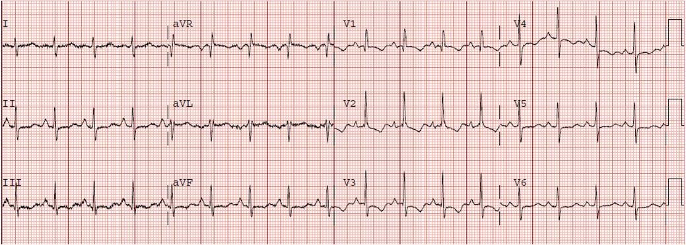
Các bác sĩ nội trú lo ngại thuyên tắc phổi (PE), điều này rất hợp lý. Tuy nhiên, tôi lập tức nhận ra rằng điện tâm đồ này thể hiện một tình trạng mạn tính, không phải cấp tính.
Tình trạng mạn tính này là gì?
Có sóng R lớn ở các chuyển đạo trước tim bên phải (V1-V3) và sóng S sâu ở chuyển đạo I. Trục lớn hơn 90 độ một chút, có lẽ 95-100. Điều này có giá trị chẩn đoán phì đại thất phải (RVH).
Sóng R lớn và tỷ lệ R/S cao ở V1 cho chúng ta biết đây là phì đại thất phải mạn tính, chứ không chỉ là tăng gánh thất phải cấp.
ST chênh xuống và sóng T âm là bất thường tái cực được dự đoán trước trong bối cảnh khử cực bất thường — những dấu hiệu này cũng điển hình của RVH. Chúng không hàm ý có thiếu máu cục bộ cấp nào.
Chúng tôi đã xét nghiệm D-dimer và kết quả âm tính, và chúng tôi cho cô nhập viện có theo dõi monitor. Troponin tăng nhẹ, có tăng lên rồi giảm xuống. Đây có thể là nhồi máu cơ tim típ 2 của thất phải do tụt huyết áp.
Cô được nhập viện và qua siêu âm tim và thông tim phải phát hiện phì đại thất phải đáng kể, tăng áp phổi với áp lực động mạch phổi 80/26 mmHg, còn lỗ bầu dục với một mức độ shunt phải sang trái. (Áp lực trung bình động mạch phổi (MAP) bình thường = 15 mmHg, và tăng khi MAP trên 25 hoặc áp lực tâm thu trên 35 mmHg.) Shunt phải sang trái hàm ý sẽ có một phần yếu tố bệnh tim tím — tôi không có số liệu độ bão hòa O2.
Cô được chẩn đoán tăng áp phổi nguyên phát.
Ngất
Bạn có thể đọc rất nhiều về ngất tại đây, bao gồm cả về điện tâm đồ trong ngất:
Emergency Department Syncope Workup: After H and P, ECG is the Only Test Required for Every Patient….. (Đánh giá ngất tại khoa cấp cứu: Sau khi hỏi bệnh sử và khám lâm sàng, điện tâm đồ là xét nghiệm duy nhất cần cho mọi bệnh nhân…..)
Đây là dữ liệu mới được công bố gần đây về điện tâm đồ trong ngất:
Đây là bài báo
Điện tâm đồ trong nghiên cứu xây dựng (derivation) Thang điểm Nguy cơ Ngất Canada (Canadian Syncope Risk Score) (toàn văn):
https://www.cmaj.ca/content/cmaj/188/12/E289.full.pdf (toàn văn bài báo xây dựng Thang điểm Nguy cơ Ngất Canada trên tạp chí CMAJ)
Và thẩm định (chỉ có phần tóm tắt):
https://jamanetwork.com/journals/jamainternalmedicine/article-abstract/2763181 (tóm tắt nghiên cứu thẩm định trên JAMA Internal Medicine)
Các bảng này lấy từ nghiên cứu xây dựng thang điểm.
Đây là các yếu tố tiên đoán biến cố bất lợi trên điện tâm đồ theo phân tích đơn biến:

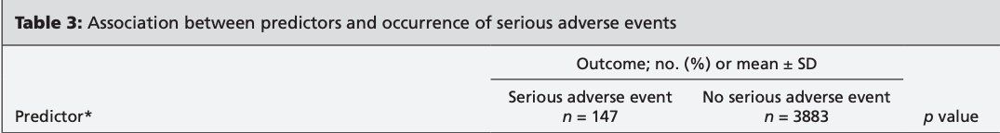

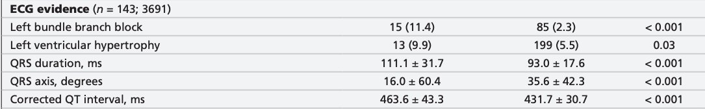
Phân tích đa biến — 3 dấu hiệu điện tâm đồ này là các yếu tố nguy cơ độc lập của biến cố bất lợi nghiêm trọng:

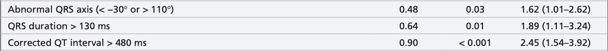
Đây là tất cả các biến độc lập được tìm thấy trong nghiên cứu xây dựng thang điểm:

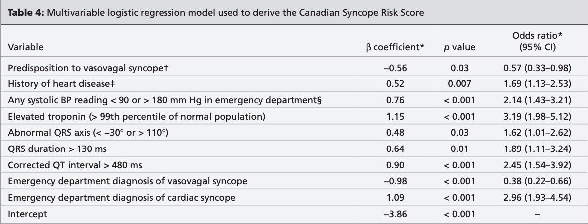
Có, nhưng chỉ khi chúng ta nhận ra rằng bệnh cảnh lâm sàng là “ngất do tim”, điều này là hiển nhiên dựa trên các triệu chứng 1) gắng sức 2) đau ngực và khó thở và 3) huyết áp trước viện.
Trong nghiên cứu này, ngoại trừ tăng troponin, ấn tượng tổng thể (Gestalt) là yếu tố tiên đoán tốt nhất.
Bài báo không nêu rõ phương pháp hiệu chỉnh QT
Tại sao phì đại thất phải (RVH) không được tìm thấy trong nghiên cứu lớn về ngất này? Có lẽ vì nó không đủ phổ biến để được phát hiện trong một nghiên cứu về ngất nói chung. Không phải yếu tố nguy cơ cao nào cũng sẽ được xác định trong những nghiên cứu như vậy, nhưng rõ ràng RVH là một tình trạng nguy hiểm và nếu được phát hiện trên điện tâm đồ thì cần được đánh giá thêm.
Tại sao lại có quá ít dấu hiệu điện tâm đồ có giá trị tiên đoán?
Bởi vì phần lớn các dấu hiệu điện tâm đồ bất thường đã được tính là kết cục bất lợi tự thân chúng, và không được đánh giá như các yếu tố tiên đoán!!

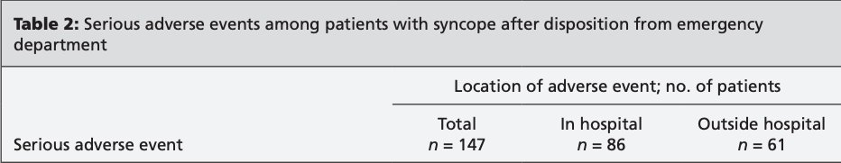

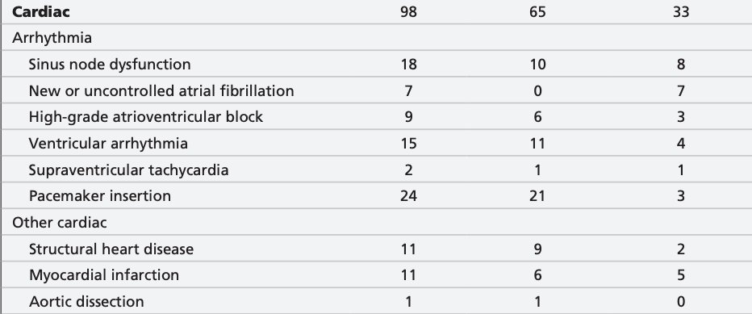
Tại sao tăng áp phổi gây ngất?
Thất phải bình thường hoạt động ở áp lực thấp, MAP khoảng 15, hay 20/12. Không giống thất trái, vốn chịu áp lực cao trong thì tâm thu và do đó được tưới máu trong thì tâm trương, thất phải có thể được tưới máu trong suốt toàn bộ chu chuyển tim. Áp lực phổi lúc nghỉ của cô là 80/26, vì vậy thất phải của cô chỉ có thể được tưới máu trong thì tâm trương.
Ngoài ra, thất phải thường có thành mỏng với độ giãn nở cao, và có khả năng giãn thành tự do khi tiền tải tăng.
Với một thất phải cứng, bất kỳ sự tăng đột ngột nào của áp lực thất phải đều dẫn đến cả thiếu máu cục bộ thất phải (và hậu quả là rối loạn chức năng thất phải, với một mức độ suy bơm), giảm cung lượng thất phải, và do đó giảm đổ đầy thất trái (giảm áp lực đổ đầy tâm trương do cung lượng thất phải kém, và giảm kích thước thất trái do vách liên thất phồng sang trái). Tất cả những điều này có nghĩa là giảm thể tích nhát bóp thất trái.
Ngoài ra, áp lực thất phải cao có thể gây hở van ba lá, làm giảm thêm cung lượng thất phải.
Điều gì gây tăng áp lực thất phải? Bất cứ điều gì làm tăng tiền tải hoặc hậu tải thất phải, đặc biệt là gắng sức, đều có thể khởi phát chuỗi diễn biến kể trên.
May mắn cho cô, tình trạng này chỉ thoáng qua. Các trường hợp quá tải thất phải nặng có thể diễn tiến xấu dần theo vòng xoắn đến tử vong.
Suy thất phải là một chủ đề phức tạp. Đây là một bài báo tuyệt vời (toàn văn) về chẩn đoán và xử trí suy thất phải tại khoa cấp cứu, đăng trên Annals of EM, của Susan Wilcox: https://emcrit.org/wp-content/uploads/2016/03/Pulm-HTN-Wilcox.pdf
Ca 2.
Đây là một ca phì đại thất phải khác, được chẩn đoán tại khoa cấp cứu nhờ điện tâm đồ:
Bệnh nhân 23 tuổi này đến khoa cấp cứu vì viêm họng, nhưng khi hỏi bệnh theo các hệ cơ quan thì cũng than phiền khó thở khi gắng sức. (Việc hỏi bệnh theo các hệ cơ quan thực sự đã tạo ra khác biệt!).
Điện tâm đồ này được ghi:

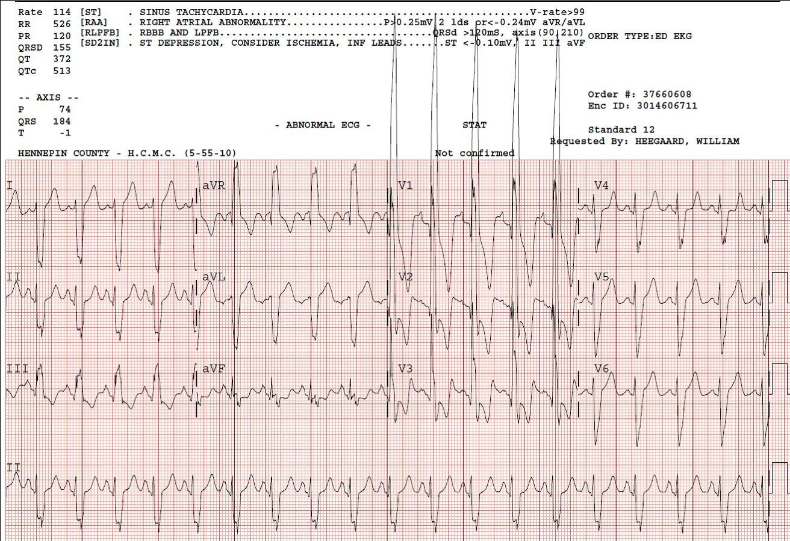
Phức bộ rộng (QRS 155 ms) có thể làm bạn phân tán chú ý khỏi nhịp, vốn chỉ đơn giản là nhịp xoang. Có sóng S rất lớn ở các chuyển đạo bên, với trục lệch phải cực độ (180 hoặc -180, như nhau). Có sóng R’ rất lớn của RBBB ở các chuyển đạo trước tim bên phải. Sự kết hợp giữa sóng S rộng ở V5 và V6 và sóng R’ lớn ở chuyển đạo V1 có giá trị chẩn đoán RBBB. RBBB thường có sóng R’ lớn, nhưng khi lớn hơn 15 mm thì gợi ý có kèm phì đại thất phải. Ở đây sóng R’ ở V1 là 65 mm !!
Vì vậy đây là chẩn đoán phì đại thất phải rất nặng. Người ta có thể lo ngại thiếu máu cục bộ vì mức ST chênh xuống và sóng T đảo ngược lớn ở V1-V3. Một mức ST chênh xuống và T đảo ngược ngược hướng (theo hướng ngược với QRS điện thế cao hoặc QRS của blốc nhánh) thường gặp sẵn ở trạng thái nền trong RBBB, nhưng ở đây nhiều hơn bình thường. Tuy nhiên, điện thế cũng lớn hơn bình thường. Tỷ lệ giữa mức ST chênh xuống và điện thế QRS vào khoảng 4mm trên 60 mm, tức 0.067, là bình thường. Troponin tăng nhẹ do thiếu máu cục bộ thất phải do tăng nhu cầu.
Khai thác bệnh sử thêm, chỉ thực hiện sau khi có điện tâm đồ, cho thấy hẹp van động mạch phổi bẩm sinh đã được nong khi 7 ngày tuổi. Từ đó đến nay bệnh nhân không được theo dõi thêm!
Siêu âm tim cho thấy áp lực động mạch phổi tâm thu đỉnh ước tính 127 mmHg, kèm thất phải lớn và phì đại nặng.
Ca 3:
Điện tâm đồ có thể giúp bạn phân biệt thuyên tắc phổi cấp với phì đại thất phải. Bấm vào link để xem ca bệnh tuyệt vời này, với siêu âm tim tại giường cho thấy thất phải lớn, nhưng điện tâm đồ cho bạn biết đó là tình trạng mạn tính:
Chronic Right Ventricular Hypertrophy, or Acute Right Heart Strain? The ECG Helps Make the Diagnosis. (Phì đại thất phải mạn tính, hay tăng gánh tim phải cấp? Điện tâm đồ giúp đưa ra chẩn đoán.)
Ca 4.
Biết được hình ảnh phì đại thất phải trông như thế nào cũng có thể giúp bạn yên tâm.
Một phụ nữ 30 mấy tuổi có tiền sử đã biết tăng áp phổi do thuyên tắc phổi mạn tính đến khám vì đau ngực sau xương ức kéo dài 12 giờ.
Đây là điện tâm đồ của cô tại khoa cấp cứu:

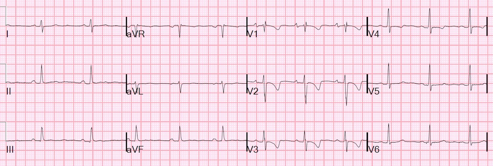
Sóng T đảo ngược ở các chuyển đạo trước tim này là điển hình của phì đại thất phải (RVH). Tuy nhiên, hầu hết các đặc điểm khác của RVH không có mặt. Có blốc nhánh phải không hoàn toàn (incomplete RBBB), điều này có ủng hộ RVH. Nhưng không có trục lệch phải (tuy nhiên trục ở mức giới hạn, 83 độ, gần như thẳng đứng. Không có sóng R lớn ở V1. Tuy nhiên, các dấu hiệu này không đủ nhạy để loại trừ RVH.
Hình thái sóng T, cùng với tiền sử đã biết tăng áp phổi, nên khiến bạn tìm một điện tâm đồ cũ.
Tôi thấy điện tâm đồ này và nghĩ ngay rằng đây có lẽ là điện tâm đồ nền của cô. Chúng tôi tìm các bản cũ, và quả thực các điện tâm đồ trước đây giống hệt.
Bệnh nhân được loại trừ cả thuyên tắc phổi lẫn nhồi máu cơ tim trong thời gian ở khoa cấp cứu, và có thể cho xuất viện. Đây là điện tâm đồ nền của cô. Chẩn đoán của chúng tôi là trào ngược dạ dày-thực quản.
2 điện tâm đồ: RVH giả hội chứng vành cấp (ACS)
Trừ khi bạn biết RVH trông như thế nào:
Ca 5
Phụ nữ 55 tuổi đau ngực và sóng T đảo ngược ở các chuyển đạo trước tim

Ca 6
Một nam giới 50 mấy tuổi bị khó thở

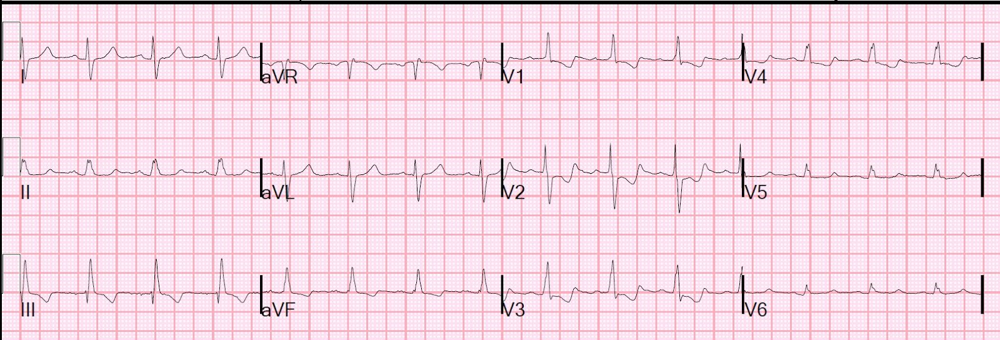

===================================
BÌNH LUẬN CỦA TÔI, bởi KEN GRAUER, MD (1/9/2020):
===================================
Theo kinh nghiệm của tôi — một trong những chẩn đoán hay bị bỏ sót nhất trong lĩnh vực đọc điện tâm đồ 12 chuyển đạo là RVH lâu năm ở người lớn. Hậu quả của việc bỏ sót chẩn đoán này có thể đe dọa tính mạng — như Dr. Smith đã nhấn mạnh ở trên qua 6 ca bệnh minh họa.
- Với hy vọng tăng cường khả năng nhận diện RVH tiến triển và tăng áp phổi trên điện tâm đồ — tôi muốn đi sâu hơn vào Ca thứ 1 được trình bày. Để rõ ràng — tôi đã trình bày lại trong Hình 1 điện tâm đồ thứ 1 này, được đưa ra ở trên trong Ca 1.
- Với những ai muốn ôn lại việc nhận diện các tiêu chuẩn điện tâm đồ của RVH — BẤM VÀO ĐÂY — và để nhận diện bất thường nhĩ phải (RAA) — BẤM VÀO ĐÂY.

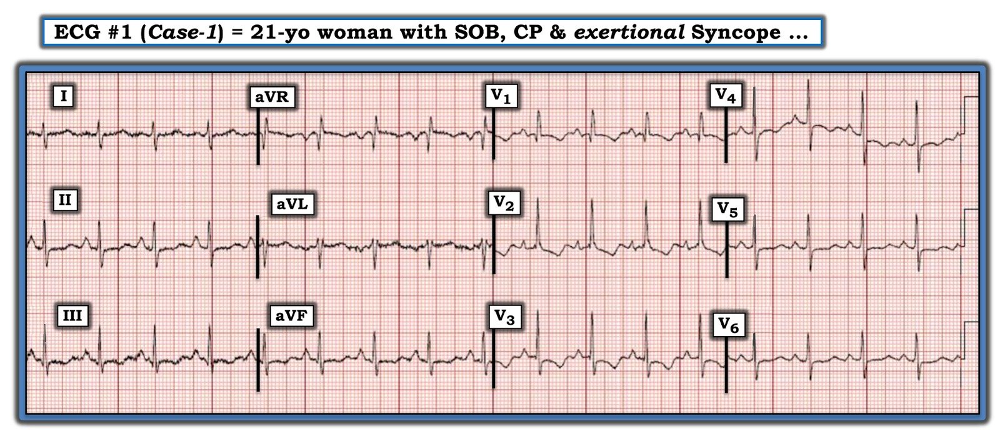
Như đã ghi trong Hình 1 — bệnh sử đi kèm bản ghi này là của một phụ nữ 21 tuổi đến khám vì khó thở, khó chịu ở ngực và ngất khi gắng sức.
- CÂU HỎI: BẠN có thể nhận ra BAO NHIÊU dấu hiệu trên điện tâm đồ #1 ủng hộ chẩn đoán RVH và tăng áp phổi?
- GỢI Ý: Nếu bạn tìm ra ít hơn 7 dấu hiệu điện tâm đồ ủng hộ — có lẽ bạn nên xem lại điện tâm đồ #1 (và/hoặc các link tôi đưa ở trên).
SUY NGHĨ CỦA TÔI về điện tâm đồ #1: Nhịp là nhịp nhanh xoang với tần số vừa trên 100 lần/phút. Các dấu hiệu điện tâm đồ ủng hộ RVH gồm:
- Trục mặt phẳng trán đứng (dương hơn +90 độ một chút — vì QRS ở chuyển đạo I âm hơn một chút và QRS ở chuyển đạo III dương thực rõ ràng nhiều hơn ở chuyển đạo II).
- RAA (được chẩn đoán dựa vào sóng P cao, nhọn và đỉnh sắc ở các chuyển đạo dưới — cao ≥2,5 mm ở chuyển đạo II).
- Có sóng R ưu thế ở chuyển đạo V1 (Bình thường chuyển đạo bên phải này phải chủ yếu là âm) — một chuyển đạo bên phải.
- Có ST-T chênh xuống gợi ý “tăng gánh” thất phải ở cả hai vùng chuyển đạo có thể thấy dấu hiệu này ( = các chuyển đạo trước và dưới ).
- Có sóng S khá lớn tồn tại kéo dài suốt các chuyển đạo trước tim (tức là sóng S khá sâu ở V5 và V6 gợi ý có các lực đáng kể hướng xa khỏi các chuyển đạo bên trái này — mà trên bản ghi này nhiều khả năng nghĩa là các lực bên phải tăng lên).
Thêm CÁC ĐIỂM THEN CHỐT (PEARLS) trên điện tâm đồ #1 ủng hộ RVH:
- Có sóng S ở cả 3 chuyển đạo chi chuẩn ( = chuyển đạo I, II, III) — một dấu hiệu gặp trong bệnh phổi.
- Dù phần lớn trường hợp RAA được chẩn đoán dựa vào sóng P cao, nhọn và đỉnh sắc ở các chuyển đạo dưới — đôi khi manh mối duy nhất của RAA mà bạn thấy là sóng P nhọn quá mức và đỉnh sắc ở một hay nhiều chuyển đạo trước (rõ nhất ở đây là chuyển đạo V2).
- Trong bối cảnh RVH với sóng R ưu thế ở chuyển đạo V1 — việc có sóng Q ở chuyển đạo V1 (tức là một hình ảnh qR, như thấy trên điện tâm đồ #1) gợi ý mạnh có tăng áp phổi.
- LƯU Ý #1: Về mặt kỹ thuật, có dấu hiệu S1Q3T3 trên điện tâm đồ #1 — nhưng cần nhớ rằng dấu hiệu này có độ nhạy và độ đặc hiệu hạn chế trong chẩn đoán PE cấp và phải được diễn giải trong bối cảnh lâm sàng mà nó xuất hiện. Như Dr. Smith đã nêu — bối cảnh lâm sàng ở Ca 1 nghiêng hẳn về việc diễn giải các dấu hiệu điện tâm đồ trên bản ghi này là ủng hộ RVH lâu năm + tăng áp phổi (chứ không phải PE cấp).
Thêm CÁC ĐIỂM THEN CHỐT (PEARLS) về chẩn đoán RVH trên điện tâm đồ:
- Phát hiện RVH ở người lớn bằng tiêu chuẩn điện tâm đồ thường cực kỳ khó. Đó là vì thất trái bình thường lớn và dày hơn thất phải nhiều đến mức nó che lấp cả những mức tăng kích thước buồng thất phải vừa phải. Hệ quả là nhiều bệnh nhân RVH sẽ không được phát hiện NẾU việc đánh giá lớn các buồng tim chỉ dựa vào điện tâm đồ (thường cần siêu âm tim để biết chắc).
- Trái với người lớn — chẩn đoán RVH bằng điện tâm đồ thường DỄ một cách bất ngờ ở trẻ em bị bệnh tim bẩm sinh (vì ở nhũ nhi và trẻ nhỏ, kích thước tương đối của thất phải so với thất trái không chênh lệch nhiều như ở người lớn).
- Điểm MẤU CHỐT — Khi đã thấy sóng R ưu thế ở chuyển đạo V1 của một người lớn — thì mức độ RVH thường đã rõ rệt (tức là bệnh nhân gần như luôn có bệnh phổi giai đoạn cuối và/hoặc tăng áp phổi).
- LƯU Ý #2: Không có tiêu chuẩn điện tâm đồ đơn lẻ nào tự nó chẩn đoán RVH một cách tin cậy. Thay vào đó, cần phối hợp nhiều dấu hiệu điện tâm đồ — nhất là khi gặp trong một bối cảnh lâm sàng phù hợp (tức là COPD, hen phế quản lâu năm, suy tim phải, tăng áp phổi).
- LƯU Ý #3: Trong y học chỉ có 1 bệnh lý gây lớn nhĩ phải mà không đồng thời gây RVH. Đó là hẹp van ba lá, vốn hiếm gặp. Vì vậy, dấu hiệu RAA trên điện tâm đồ mà không phải do thể trạng mảnh khảnh — thường cung cấp một manh mối gián tiếp quan trọng về sự hiện diện của RVH.
SUY NGHĨ CUỐI CÙNG về Ca 1: Nhìn lại Ca 1 — xét đến tuổi trẻ của bệnh nhân và mức độ nặng của triệu chứng lúc đến viện (tức là ngất khi gắng sức là dấu hiệu báo động!) — sự phối hợp các dấu hiệu điện tâm đồ nêu trên phải khiến ta nghi ngờ tăng áp phổi nguyên phát chỉ trong vài giây cần để nhận ra sóng R ưu thế ở chuyển đạo V1 + RAA + “tăng gánh” thất phải ở các chuyển đạo dưới và trước.
- Bệnh sử ở ca này — khó thở, khó chịu ở ngực và ngất khi gắng sức ở một phụ nữ trẻ — là điển hình của tăng áp phổi nguyên phát.
- Số bệnh lý có khả năng biểu hiện lần đầu (de novo) ở một phụ nữ trẻ tuổi có các dấu hiệu điện tâm đồ của RVH nặng lâu năm + tăng áp phổi như ta thấy trên điện tâm đồ #1 là có giới hạn.